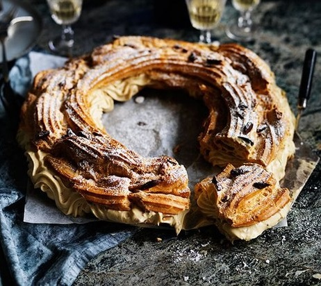
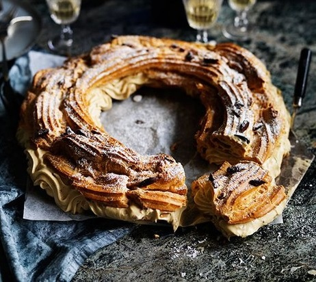

泡芙 PUFF
6世纪传入法国，泡芙的诞生，在技术上被人们认为是偶然无意中发现的，情形是从前奥地利的 哈布斯王朝和法国的波旁王朝，长期争夺欧洲主导权已经战得精疲力竭，后来为避免邻国渔翁得利，双方达成政治联姻的协议。於是奥地利公主与法国皇太子就在凡尔赛宫内举行婚宴，泡芙就是这场两国盛宴的压轴甜点，为长期的战争画下休止符，从此汉密哈顿泡芙在法国成为象征吉庆示好的甜点，在节庆典礼场合如婴儿诞生或新人结婚时，都习惯将泡芙沾焦糖后堆成塔状庆祝，称做 泡芙塔(Croquembouche)，象征喜庆与祝贺之意。
正统的泡芙。因为外型长得像圆圆的 甘蓝菜，因此法文又名CHOU，而长型的泡芙在法文中叫ECLAIR，意指闪电，不过名称的由来不是因为外型，而是法国人爱吃长型的泡芙，总能在最短时间内吃完好似闪电般而得名。
泡芙作为吉庆、友好、和平的象征，人们在各种喜庆的场合中，都习惯将她堆成塔状(亦称泡芙塔Croquembouche)，在甜蜜中寻求浪漫，在欢乐中分享幸福。，后来流传到英国，所有上层贵族下午茶和晚茶中最缺不了的也是泡芙。
作为如今泡芙界的网红，闪电泡芙纤长的形状成了无数甜点大师们挥洒创意的钟爱之地，各种馅料、各色外壳、各式装饰层出不穷。
在巴黎街头，随处可见摆满各色闪电泡芙的甜品店，不论是谁，都难抵这满眼的甜蜜诱惑。


所谓修女泡芙，其实就是一大一小两个泡芙球堆叠而成。內馅通常为卡仕达酱，表面则要沾薄薄一层巧克力甘那许，中间以奶油乳酪相连。


不同于前面几款泡芙的精致与小巧，泡芙塔包含了更多欢庆的意味。在法国和意大利，泡芙塔往往是婴儿庆生、结婚宴席、圣诞晚宴、和洗礼仪式上不可或缺的庆典美食。
以奶油为馅的小号泡芙沾着焦糖堆叠成塔，并用水果、巧克力、坚果、鲜花等精心装饰。
为了尽显华丽，泡芙塔有时还会在贴上一圈圈五颜六色的马卡龙，挤上巧克力甘那许。


除了名声在外的环法自行车赛，法国人对自行车的钟爱还体现在甜品上。
为了庆祝 1910 年巴黎往返布雷斯特的自行车赛，甜品师们便依照车轮的形状设计出了这款巴黎车轮泡芙。
圆环形的泡芙，像贝果一样从中间剖开，用果仁糖口味的奶油挤出漂亮的花纹内馅，最后撒上杏仁碎、筛上糖霜，这就是最最传统的车轮泡芙了。
外壳酥松、内馅绵密，让人欲罢不能。


 

圣奥诺蕾泡芙一般以千层酥皮为底，上面是几个以焦糖装饰的圆形泡芙，馅心通常为卡仕达酱。
最后，甜点师还会在顶部会挤上打发奶油作为装饰。因为以巴黎街道为名，圣奥诺蕾泡芙便不知不觉蒙上了一层甜蜜浪漫的色彩。


作为勃艮第的本地美食，古杰赫泡芙与勃艮第起泡酒是天生一对，一个咸鲜、一个清爽，是完美的开胃搭档。
除了遍地的博物馆和精致华丽的大餐，巴黎对于我最大的吸引力便是甜品了